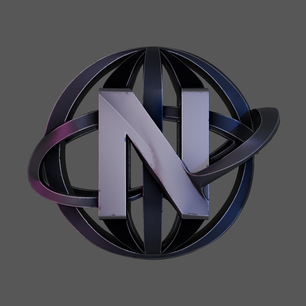

NathGPTCréer votre compte
Un pseudo, un mot de passe. C’est tout.
- Compte sécurisé
- Réponses en direct
- Mode vocal

NathGPTUn pseudo, un mot de passe. C’est tout.
Ce montant représente les euros économisés depuis la création de votre compte.
Je vous écoute…
Parlez en français, puis terminez pour envoyer. La transcription peut utiliser le service vocal du navigateur.
Chargement…
Sur iPhone et iPad, NathGPT s’utilise depuis l’écran d’accueil : plein écran, Dynamic Island et plus de barre Safari.